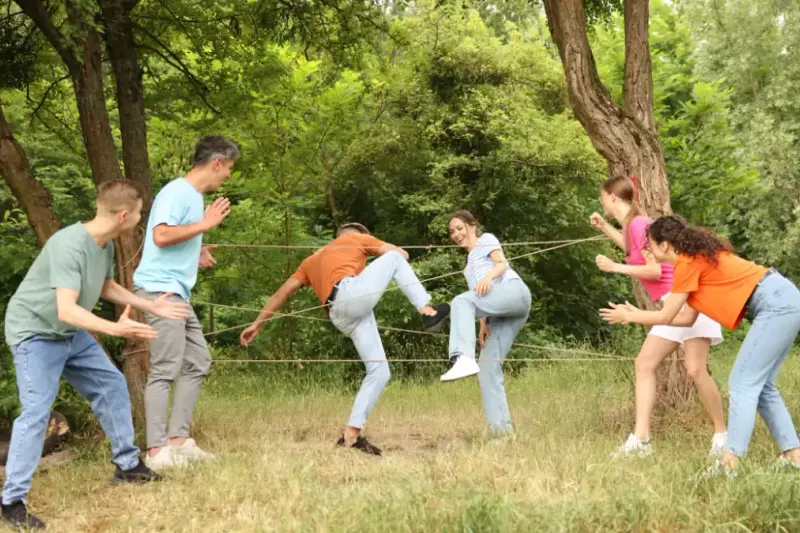

Game team building outdoor adalah aktivitas kerja sama tim yang memanfaatkan tantangan fisik di alam terbuka, mulai dari wahana ketinggian hingga simulasi menantang lain yang melatih keberanian peserta. Aktivitas ini dapat diadaptasi untuk lingkungan sekolah maupun format daring bagi tim jarak jauh.
Ringkasan Inti
- Flying Fox dan Spider Web menjadi dua wahana outdoor yang paling memacu adrenalin peserta
- Games outbound teamwork di sekolah dirancang khusus untuk anak usia 5 sampai 15 tahun
- Games outbound teamwork online menjawab kebutuhan tim kerja jarak jauh
- Emoji Challenge dan simulasi ruang pelarian virtual menjadi contoh aktivitas daring populer
- Setiap format wajib disesuaikan dengan karakteristik dan usia peserta
1. Game Team Building Outdoor Apa yang Paling Memacu Adrenalin
Game team building outdoor yang paling memacu adrenalin adalah Flying Fox dan Spider Web, karena keduanya menuntut peserta menghadapi ketakutan akan ketinggian dan kegagalan secara langsung. Kedua wahana ini biasa dijadikan puncak acara karena efek emosionalnya paling terasa bagi peserta.
Wahana Spider Web
Cara kerja wahana Spider Web adalah seluruh anggota tim saling mengangkat rekan untuk melewati lubang jaring tanpa menyentuh tali, dengan aturan setiap lubang hanya boleh digunakan satu kali. Aturan ini memaksa tim menyusun strategi bersama sebelum peserta pertama mulai bergerak.
Flying Fox
Flying Fox efektif melatih keberanian karena peserta harus mengambil keputusan mandiri untuk melepaskan diri dari titik aman menuju tantangan yang belum pernah dicoba sebelumnya. Momen keraguan sebelum meluncur inilah yang biasanya menjadi bahan refleksi paling kuat saat sesi debriefing.
2. Bagaimana Penerapan Games Outbound Teamwork di Sekolah?
Penerapan games outbound teamwork di sekolah dirancang khusus untuk peserta didik usia 5 sampai 15 tahun guna mengembangkan rasa percaya diri, keberanian mencoba hal baru, dan kreativitas sejak dini. Rentang usia ini menentukan tingkat kesulitan dan jenis wahana yang boleh digunakan.
3. Apa yang Perlu Diperhatikan saat Games Outbound Teamwork di Kelas?
Hal yang perlu diperhatikan saat games outbound teamwork in classroom adalah keterbatasan ruang gerak, sehingga permainan sebaiknya dipilih yang tidak membutuhkan area luas namun tetap melatih kerja sama antar siswa. Permainan berbasis instruksi verbal dan gerak sederhana lebih cocok diterapkan di dalam kelas dibanding wahana ketinggian.
Poin penting penerapan games outbound teamwork di sekolah:
- Sesuaikan tingkat kesulitan dengan usia dan kemampuan motorik siswa
- Libatkan pengawasan guru atau fasilitator terlatih di setiap sesi
- Utamakan aspek keselamatan dibanding intensitas tantangan
4. Apa Solusi Games Outbound Teamwork Online untuk Tim Jarak Jauh?
Solusi games outbound teamwork online untuk tim jarak jauh adalah memanfaatkan aktivitas interaktif berbasis video call yang tetap melatih komunikasi dan kekompakan meski peserta berada di lokasi berbeda. Format ini menjawab kebutuhan perusahaan dengan sistem kerja hibrida atau sepenuhnya remote.
Emoji Challenge dalam Sesi Online
Cara kerja Emoji Challenge dalam sesi online adalah instruktur mengamati pola emoji yang paling sering digunakan peserta di ponsel masing masing, lalu mengaitkannya dengan diskusi ringan seputar suasana hati dan tingkat stres tim saat ini. Aktivitas ini membuka ruang obrolan santai yang jarang muncul dalam rapat kerja biasa.
Video Games Kerja Sama Tim
Video games yang membutuhkan kerja sama tim dalam konteks outbound online biasanya berbentuk simulasi ruang pelarian virtual, di mana peserta memecahkan teka teki bersama di bawah tekanan waktu terbatas. Aktivitas ini menuntut kemampuan observasi dan logika analitis yang sama seperti tantangan outbound fisik, hanya berpindah ke format digital.